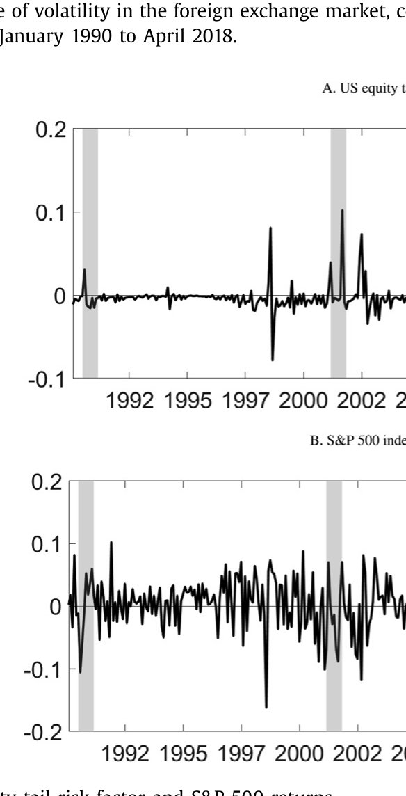
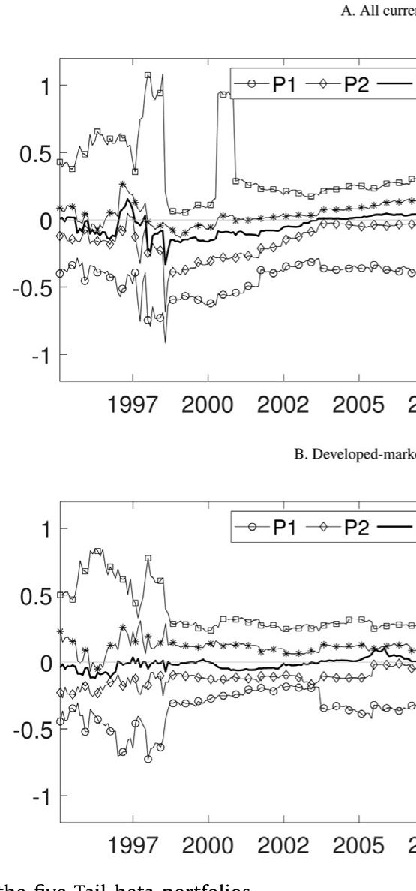
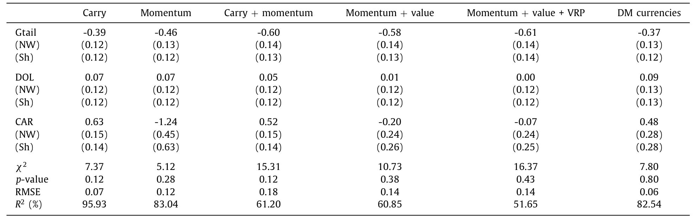
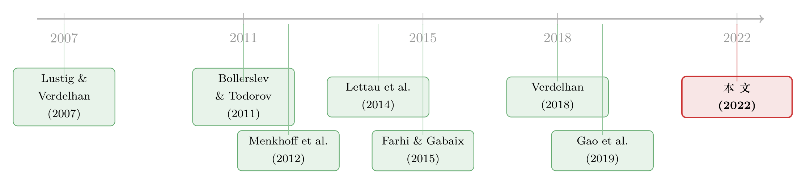

一篮子货币里，藏着一份免费的「尾部保险」
本文读的是 Fan, Londono & Xiao (2022, Journal of Financial Economics)：他们用一个基于期权的股票尾部风险因子 (option-implied equity tail risk factor)，去解释货币的横截面收益。核心发现反直觉——对股票尾部风险暴露越高的货币，预期收益反而越低，因为它在股灾时会升值，本身就是一份对冲。把「高尾部 beta 减低尾部 beta」做成多空组合，又恰好榨出了一个全局因子 Gtail，它在套利交易、动量乃至其他资产类别里，都带着一个稳定为负的风险价格。
1 一个老问题，和一个被忽略的视角
汇率市场有几个出了名的谜。最有名的两个，一是套利交易 (carry trade)——借低息货币、买高息货币，长期居然能稳稳赚钱；二是货币动量 (currency momentum)——过去涨的接着涨、过去跌的接着跌。按理说，利率平价该把这些利差抹平才对，可它们就是顽固地存在，几十年来一直是汇率研究里最被反复盘问的两道题。
主流的解释思路，是「风险补偿」：高息货币之所以多赚，是因为它在某些「坏时候」会崩，投资者要的就是承担这份崩盘风险的报酬。沿着这条线，文献里塞进过各种各样的「坏时候」——美国消费增长、外汇市场的波动率、全球灾难风险，等等。
但这些研究有一个共同的习惯：它们盯着货币本身的尾部风险（货币会不会突然暴跌）。Fan、Londono 和 Xiao 这篇文章，换了一个角度。他们问的是一个听上去有点「跨界」的问题：
一国股票市场的尾部风险，会不会被定价进汇率里？
这个跨界并非凭空而来。一个把财富押在股市里的、风险厌恶的投资者，他最怕的就是股市突然跳水。如果某种货币恰好在「股市要崩」的时候对美元升值，那么这种货币对他来说就是一份天然的尾部对冲 (tail hedge)。既然能对冲，他就愿意为持有它付出代价——也就是说，愿意接受更低的预期收益。
这就是全文的那一个核心：货币的预期收益，取决于它对股票尾部风险的暴露；暴露越高（对冲性越好），收益越低。 接下来的一切，都是围着这一句话转。
2 先把「尾部风险」量出来
要检验这个想法，第一步是得有一个干净的、可交易的「股票尾部风险」度量。作者没有用已实现的暴跌数据（极端事件太稀有，几十年也碰不上几次，落进所谓的 peso problem——小样本里灾难根本没出现，估计自然失真），而是直接从期权价格里把市场对尾部的恐惧「读」出来。
他们采用 Bollerslev and Todorov (2011) 提出的期权隐含左尾测度 (option-implied left jump tail measure) LT^Q，它由短期限的虚值 (out-of-the-money, OTM) 看跌期权价格算出，刻画的正是投资者为对冲极端负向跳跃所愿意支付的补偿：
$$ LT_t^Q(T,k) \equiv P_t(S_T^t,k) \approx E_t^Q\big[(k - e^{J_T}\Delta N_T)^+\big] $$
这里 \(P_t(T,k)\) 是一份执行价对应 moneyness 为 \(k\) 的 OTM 看跌期权价格，\(J_T\) 是跳跃幅度，\(\Delta N_T\) 是是否发生跳跃的示性变量。直觉上，深度虚值的看跌期权只有在市场真的「跳水」时才会变成实值，所以它的价格就是市场对左尾的报价。
但真正巧妙的一步在后面。作者证明，这个尾部测度的变化 \(\Delta LT_{t+1}^Q\)，可以用一个可交易组合的收益来近似——一份保护性看跌 (protective put / married put) 策略，即同时持有标的与一份看跌期权：
$$ \Delta LT_{t+1}^Q(T,k) \approx \log(P_{t+1}+S_{t+1}) - \log(P_t+S_t) =: \mathrm{Tail}_{t+1} $$
这一下就把一个抽象的风险测度，落成了一个可以真金白银去交易、去对冲的因子 Tail。由于美国的股指期权（S&P 500）流动性最好、样本最长，作者就以美国为「本国」，用 S&P 500 期权算出这个 Tail 因子。它是逆周期 (countercyclical) 的：市场下行、尾部恐惧高涨时它走高，平静时走低。

Figure 1: Time series of the US equity tail risk factor and S&P 500 returns
为什么敢用美国一国的股市尾部去代表「全局」？这正是文章后面要论证的关键——美国股市的波动有很强的全局成分，与 Miranda-Agrippino and Rey (2020) 所说的「全球金融周期 (global financial cycle)」一脉相承。Rapach et al. (2013) 也发现美国股票收益对国际股市有领先的预测力，而反向几乎不成立。
3 一个简约模型：尾部风险如何渗进汇率
文章有一个 stylized 的简约式 (reduced-form) 模型，沿用 Verdelhan (2018) 的框架。它不长，但每一步都直接服务于实证设计，值得一步步拆开看。
设定。 假设每个国家 \(k\) 的对数名义随机贴现因子 (stochastic discount factor, SDF) \(m_{k,t+1}\) 由三类冲击驱动：国别特定冲击 \(u_k\)、全局冲击 \(u_g\)，以及一个尾部因子 \(\mathrm{Tail}_k\)：
其中 \(i_k\) 是无风险利率，\(a_k\) 是使 \(E_t[e^{m_{k,t+1}}]=e^{i_{k,t}}\) 成立的常数。
关键假设。 每个国家的尾部风险，又被进一步拆成一个全局成分和一个国别特定成分：
$$ \mathrm{Tail}_{k,t+1} = \zeta_k\,\mathrm{Tail}_{t+1}^{global} + \mathrm{Tail}_{k,t+1}^{local} \tag{2} $$
\(\zeta_k\) 就是国家 \(k\) 在全局尾部因子上的载荷。这一步是全文的「文眼」：尾部风险不是铁板一块，它有一块大家共担的全局部分，也有一块各家自扫门前雪的本地部分。
汇率。 在完全市场假设下，本国与外国 \(k\) 之间名义汇率的对数变化，等于两国对数定价核之差（Backus et al., 2001）：
$$ \Delta fx_{k,t+1} = m_{t+1} - m_{k,t+1} \tag{3} $$
把 (1)、(2) 代进去，本国投资者投资货币 \(k\) 的超额收益 \(rx_{k,t+1}\) 就能被整理成三块——外国冲击、本国冲击、以及全局冲击。其中和全局尾部因子直接挂钩的那一项是 \((\lambda\zeta - \lambda_k\zeta_k)\,\mathrm{Tail}_{t+1}^{global}\)。
核心推导。 由于 \(\mathrm{Tail}^{global}\) 不可直接观测，作者转而看货币超额收益对本国尾部因子的条件 beta：
$$ \beta_{Tail,k,t} \equiv \frac{\mathrm{cov}_t(rx_{k,t+1}, \mathrm{Tail}_{t+1})}{\mathrm{Var}_t(\mathrm{Tail}_{t+1})} = \frac{\zeta(\lambda\zeta-\lambda_k\zeta_k)\,\mathrm{Var}_t(\mathrm{Tail}_{t+1}^{global}) + \lambda\,\mathrm{Var}_t(\mathrm{Tail}_{t+1}^{local})}{\mathrm{Var}_t(\mathrm{Tail}_{t+1})} \tag{6} $$
接着，一个自然的问题是：这个能观测的 \(\beta_{Tail,k,t}\)，和我们真正想要的、对全局尾部因子的暴露 \(\beta_{Tail,k,t}^{global}\)，是什么关系？把两者对照，可以得到
$$ \beta_{Tail,k,t}^{global} = \frac{(\lambda\zeta - \lambda_k\zeta_k)\,\mathrm{Var}_t(\mathrm{Tail}_{t+1}^{global})}{\mathrm{Var}_t(\mathrm{Tail}_{t+1}^{global})} \tag{7} $$
对比 (6) 与 (7)，可以看出：按 \(\beta_{Tail,k,t}\) 给货币排序，等价于按 \(\beta_{Tail,k,t}^{global}\) 排序（只要 \(\zeta\neq 0\)）。换句话说，那个看不见的全局尾部暴露虽然测不出来，但用看得见的本国尾部 beta 当代理，排序结果是一样的。这正是后面构建组合的理论许可证。
点睛之笔：多空组合萃取全局成分。 既然如此，作者定义一个买入高尾部 beta、卖出低尾部 beta 的多空组合，称之为全局尾部因子 Gtail：
$$ Gtail_{t+1} = \frac{1}{N_{H\beta}}\sum_{k\in H\beta} rx_k - \frac{1}{N_{L\beta}}\sum_{k\in L\beta} rx_k \tag{8} $$
为什么这么做？因为当货币数量 \(N\to\infty\) 时，高、低 beta 两组里的外国冲击、本国冲击、全局扩散冲击都会被分散平均掉，只剩下大家共担的那块全局尾部风险无法分散：
$$ \lim_{N\to\infty} Gtail_{t+1} = (\bar\beta_t^{H\beta} - \bar\beta_t^{L\beta})\,\mathrm{Tail}_{t+1}^{global} \tag{9} $$
于是反转出现了——一个原本只能用美国股市期权间接窥见的「全局尾部风险」，竟然可以用一篮子货币的多空组合直接交易出来。而且模型还顺手给出一个重要警示：不能简单地把各国货币的尾部风险加总来构造全局因子（文中记作 \(\widetilde{Gtail}\)），因为汇率是相对量，加总很可能把全局成分相互抵消掉。作者构造的 Gtail 因子，按设计就保证了它带有全局性质，这是它优于朴素加总的地方。
4 识别策略与数据
讲清了模型，实证就顺理成章。
数据。 1990 年 1 月至 2018 年 4 月，覆盖 37 种新兴与发达市场货币，全部以「每 1 美元兑多少外币」报价。尾部因子 Tail 来自 S&P 500 期权。
组合构造。 每一期，用过去窗口估计每种货币对 Tail 因子的时变尾部 beta，再按 beta 把货币分成五组（quintile），做成 Tail-beta 五分位组合。下图给出这五个组合 beta 的时间序列——它们彼此分得很开，且随时间稳定保持次序，说明排序确实抓住了暴露上的异质性。

Figure 2: Time series for the betas of the five Tail-beta portfolios
两阶段定价检验。 主菜是 Fama and MacBeth (1973) 两阶段回归：第一阶段时序回归估各组合对因子的暴露，第二阶段横截面回归估风险价格 (price of risk)。标准误用 Shanken (1992) 校正、并辅以 Newey-West 等稳健处理。检验资产不只是 Tail-beta 组合，还包括套利交易组合、动量组合，以及来自货币价值、方差风险溢价等其他策略的组合，乃至全球股票、主权债、商品的组合——看 Gtail 能否一以贯之地定价。
5 主要结果
第一个结果，也是最直观的一个。 按尾部 beta 排序的五分位货币组合，未来收益呈现明显的递减趋势。买入最高 beta 组、卖出最低 beta 组的多空组合，在全样本中年化平均超额收益为 -4.73%，在发达市场样本中为 -4.57%，对应的夏普比率分别是 -0.7 和 -0.6。
负号是要点。尾部 beta 越高的货币，收益越低——这恰恰印证了模型的预言：它们是尾部对冲，所以贵、所以收益低。而且作者证明，这个收益价差无法被既有的货币因子解释，包括 Verdelhan (2018) 的美元因子与套利因子、Menkhoff et al. (2012a) 的外汇波动率因子，以及全球股票因子。
第二个结果：全局性的检验。 模型说，尾部风险的横截面定价应当与参照货币无关。作者于是站到英国投资者和日本投资者的角度重做一遍。结果，用美国股市尾部风险去给英镑计价和日元计价的货币排序，多空价差在全样本中分别是 -3.82% 和 -4.69%，在发达市场样本中是 -4.90% 和 -4.69%。换了计价货币，结论稳如泰山——这就坐实了：美国股市的尾部风险确实带有全局成分。
第三个结果：Gtail 的统治力。 用 Gtail 配合美元因子和套利因子做定价检验，Gtail 不仅能分别解释套利组合和动量组合，还能联合解释；即便把横截面扩充进其他策略的组合，结论依旧稳健。而最关键的一点是：在各种货币组合里，Gtail 始终带着一个显著为负的风险价格。

Table 6: reports the results for the second-stage Fama-
负的风险价格意味着什么？意味着套利交易、动量这些策略的超额收益，可以部分地理解为投资者为承担全局尾部风险所要的补偿——高息货币、赢家货币之所以多赚，正因为它们对全局尾部因子的暴露更低（对冲性更差），坏天气一来跌得更狠。这把好几个汇率之谜，串到了同一根线上。
最后一个问题：谁的货币尾部 beta 高？ 作者把货币的尾部 beta 与国别经济基本面对照，发现：基础出口比率 (basic export ratio) 越低、国际货币暴露越低、在全球贸易网络中越居于中心的国家，其货币的尾部 beta 越高。这些货币更容易在股票尾部风险升高时对美元升值，从而提供对冲——这一发现与贸易网络在汇率定价中的角色相互呼应（关于贸易网络的位置如何写进货币溢价，可参见《你的货币贵不贵，要看你在贸易网络里坐第几排》）。
6 文献脉络
把这篇文章放回它生长的土壤里看，会更清楚它的位置。
最早的一支，是用「风险」去解释套利交易的传统。Lustig and Verdelhan (2007) 用美国消费增长风险开了头；随后 Menkhoff et al. (2012a) 提出外汇市场的全球波动率因子，Lettau et al. (2014) 引入股票下行风险，一步步把「坏时候」具体化。
另一支，专攻货币市场的崩盘风险 (crash risk)。Brunnermeier et al. (2008) 发现高利差预示着负偏度，Jurek (2014) 用期权对冲的套利交易去度量崩盘风险的贡献，Chernov et al. (2018) 则在参数模型里坐实了货币收益与波动率中跳跃的存在。这一支盯的多是单个货币自身的崩盘。
再往结构化的方向走，Farhi and Gabaix (2015) 用全球灾难风险的结构模型复现了远期升水之谜，把系统性灾难风险推到台前。

与此同时，度量「尾部」的工具在期权市场里成熟起来——Bollerslev and Todorov (2011) 的期权隐含尾部测度，正是本文 Tail 因子的源头；Gao et al. (2019) 则尝试从各国资产里加总出一个全局尾部关切。而把股票风险与汇率联系起来的努力，从 Glen and Jorion (1993)、Campbell et al. (2010) 的货币对冲，到 Kremens and Martin (2019) 用 quanto 隐含协方差预测汇率，再到 Lettau et al. (2014)、Dobrynskaya (2014) 的股票下行风险，一直没断过线。
本文站在这几条线的交汇处：它既用期权隐含的尾部测度（接 Bollerslev-Todorov 一支），又沿 Verdelhan (2018) 的简约框架做横截面定价，还用一个可交易的多空组合把全局成分萃取出来。相较 Lettau et al. (2014) 的股票下行风险，作者强调两点本质区别：其一，下行风险是不可交易的股票因子，而 Gtail 是一个可交易的货币组合收益；其二，Gtail 的构造方式天然保证了它的全局性。也正因如此，Gtail 与股票下行风险因子只有弱相关——它确实是一个新东西。
7 评论与延伸（Q&A + 研究方向）
(a) 几个可能的疑问
Q：尾部 beta 高的货币收益更低，这听起来和「高风险高收益」直接矛盾，到底怎么理解？
不矛盾，关键在「对冲」二字。这里的尾部 beta 度量的是货币与股票尾部因子的协动方向：beta 高，意味着股市要崩时这货币会升值，它是个保险。保险本身是要花钱买的——体现为更低的预期收益。真正承担风险（坏天气跌得更狠）的，反而是那些低 beta 的高息、赢家货币，所以它们收益高。符号完全符合定价逻辑。
Q：用美国一国的股市尾部，凭什么代表「全局」尾部？这不是很强的假设吗？
作者不是靠假设，而是靠检验。他们换到英镑、日元投资者的视角重做排序，价差依然显著为负（
-3.82%到-4.90%不等）。如果美国尾部纯属本地现象，换计价货币后定价就该失效。它没失效，这就是全局成分存在的直接证据，背后也有「全球金融周期」一类文献撑腰。
Q：Gtail 和直接把各国尾部风险加总得到的全局因子（\(\widetilde{Gtail}\)）有什么不同？
模型 (10) 式说得很清楚：汇率是相对量，简单加总以美元计价的各国尾部，很可能把全局成分相互抵消掉，剩下的载荷 \(\lambda\zeta-\sum\lambda_k\zeta_k\) 符号还时正时负、无法保证。而
Gtail用多空组合，在 \(N\to\infty\) 时把本地成分分散干净、只留全局成分（(9) 式），载荷恒正。所以Gtail是更干净的全局尾部代理。
Q：这个负的风险价格，会不会只是套利交易/动量收益换了个名字？
有这个担心是对的，所以作者做了两件事。一是把检验资产扩展到货币价值、方差风险溢价，乃至全球股票、主权债、商品的组合，
Gtail的负风险价格一以贯之；二是控制了一长串已有因子（FX 波动率、全球灾难风险、美元套利、VIX 创新等）后，Gtail仍有显著定价力。它不只是给老策略重新贴了个标签。
Q：尾部 beta 是时变的，估计窗口和噪声会不会主导结果？
这是实证里最该追问的。作者用 Tail-beta 五分位组合的 beta 时间序列（图 2）来缓解疑虑——五组 beta 长期分得开、次序稳定，说明排序抓的是结构性的暴露差异而非估计噪声。但时变 beta 的估计误差、以及它如何随窗口选择波动，仍是这类研究绕不开的脆弱点。
Q：和「股票下行风险」（Lettau et al., 2014）到底差在哪，仅仅是构造不同？
不止构造。下行风险是不可交易的市场因子，本质是「市场大跌时」的条件 beta；尾部风险来自期权，刻画的是市场对极端跳跃的恐惧，且
Tail因子对应一个可交易的保护性看跌组合。两者实证上只有弱相关——Gtail捕捉的是被下行 beta 漏掉的那部分极端尾部信息。
(b) 几个可能的研究问题与提案
1. 把「股票尾部对冲」搬到公司债/信用市场
【经济故事】既然某些货币因为对冲股票尾部而收益偏低，那么对冲股票尾部的信用资产是否也该有更低的信用利差？比如那些在股灾中利差扩张更小的高评级债，可能正提供尾部对冲。把
Tail因子用在公司债横截面上，检验信用利差里是否有一块「负的尾部风险价格」。 【可行性】中。Tail因子可复制（S&P 500 期权），公司债收益与利差数据（TRACE + Mergent）也成熟。难点在于债券尾部 beta 的估计与流动性混杂——信用利差里流动性成分太大，识别需要小心剥离（可参见《把「成交价」从「成交量」里解放出来》）。
2. 外资持有结构与货币的尾部 beta
【经济故事】作者发现尾部 beta 与贸易网络中心性、国际货币暴露相关。一个自然的延伸：一国资产的外资持有人结构（谁在持有、是否以美元为本位）是否驱动其货币的尾部对冲性质？外资越是「美元本位」的投资者，越可能在尾部时撤资，反而压低该货币的对冲价值。 【可行性】中高。TIC、IMF CPIS 等跨境持仓数据可得，可与货币尾部 beta 做面板回归。识别上可借助外生的全球风险冲击（如 VIX 跳升）做事件分析。
3. Gtail 与新兴市场债券危机的预测
【经济故事】
Gtail是逆周期、带全局尾部信息的可交易因子。它是否对新兴市场主权债利差、资本外流有领先的预测力？若是，它就能当一个实时的「全球尾部温度计」。 【可行性】高。Gtail月频可构造，主权 CDS、EMBI 利差数据齐全，做预测回归与样本外检验都直接。
4. 期权流动性约束下 Tail 因子的可交易性
【经济故事】
Tail因子理论上等于保护性看跌组合的收益，但深度虚值期权流动性差、买卖价差大。真实可执行的尾部对冲组合，收益会被交易成本吃掉多少？这关系到整套故事是「纸面溢价」还是「真金白银」。 【可行性】中。需要 OptionMetrics 的报价与流动性数据，按真实价差和持仓限制重构组合。诚实地说，深度 OTM 期权的成交数据稀薄，结论会对成本假设敏感。
5. 跨资产的「全局尾部」是不是同一个？
【经济故事】作者发现
Gtail能定价股票、主权债、商品等多类资产。那么从不同资产类别里萃取的「全局尾部因子」是否实为同一个潜在因子？若能证明它们高度共线、且都对应同一个 SDF 成分，将是「全局尾部风险」作为基本定价因子的有力证据。 【可行性】中。可在多资产组合上做联合 GMM 估计与因子张成检验（Hansen, 1982; Hansen and Jagannathan, 1997 的框架）。挑战在于不同资产的数据频率与样本期对齐。
8 我的判断与参考文献
贡献。 这篇文章最漂亮的地方，是它把一个看似抽象的「全局尾部风险」，通过一个简约模型，转化成了一个可交易、且按构造就保证全局性的多空货币组合 Gtail。它给套利交易、货币动量这些老谜题提供了一个统一的、风险基础的解释，并且诚实地论证了为什么不能用朴素加总来代替。负风险价格的符号在多个资产类别中的一致性，是相当有说服力的。
对识别的担忧。 我有两点保留。其一，尾部 beta 是用滚动窗口估出来的时变量，整套排序的结果对窗口长度、估计噪声有多敏感，文章虽有图 2 佐证组合层面的稳定性，但单个货币层面的 beta 估计误差仍可能在小样本里放大。其二，Gtail 与套利、动量收益的关系是「部分解释」，但负风险价格与这些策略本身的高相关，使得「Gtail 究竟是独立的定价因子，还是这些策略收益的线性组合」这一问题，需要更强的样本外与跨期检验来分清因果。
后续想看的。 我最想看到的是把这套尾部对冲逻辑推到信用市场和外资持有人上去——如果货币的尾部对冲价值真的来自持有人在坏天气里的行为，那么直接用持仓数据去刻画「谁在尾部时跑路」，会比用 beta 反推更有说服力。
参考文献
- Backus, D.K., Foresi, S., Telmer, C.I. (2001). Affine term structure models and the forward premium anomaly. Journal of Finance 56(1), 279–304.
- Bollerslev, T., Todorov, V. (2011). Tails, fears, and risk premia. Journal of Finance 66(6), 2165–2211.
- Brunnermeier, M.K., Nagel, S., Pedersen, L.H. (2008). Carry trades and currency crashes. NBER Macroeconomics Annual 23(1), 313–348.
- Campbell, J.Y., Serfaty-De Medeiros, K., Viceira, L.M. (2010). Global currency hedging. Journal of Finance 65(1), 87–121.
- Chernov, M., Graveline, J., Zviadadze, I. (2018). Crash risk in currency returns. Journal of Financial and Quantitative Analysis 53(1), 1–34.
- Dobrynskaya, V. (2014). Downside market risk of carry trades. Review of Finance 18(5), 1885–1913.
- Fama, E.F., MacBeth, J.D. (1973). Risk, return, and equilibrium: empirical tests. Journal of Political Economy 81(3), 607–636.
- Farhi, E., Gabaix, X. (2015). Rare disasters and exchange rates. Quarterly Journal of Economics 131(1), 1–52.
- Gao, G.P., Lu, X., Song, Z. (2019). Tail risk concerns everywhere. Management Science 65(7), 3111–3130.
- Glen, J., Jorion, P. (1993). Currency hedging for international portfolios. Journal of Finance 48(5), 1865–1886.
- Hansen, L.P., Jagannathan, R. (1997). Assessing specification errors in stochastic discount factor models. Journal of Finance 52(2), 557–590.
- Jurek, J.W. (2014). Crash-neutral currency carry trades. Journal of Financial Economics 113(3), 325–347.
- Kremens, L., Martin, I. (2019). The quanto theory of exchange rates. American Economic Review 109(3), 810–843.
- Lettau, M., Maggiori, M., Weber, M. (2014). Conditional risk premia in currency markets and other asset classes. Journal of Financial Economics 114(2), 197–225.
- Lustig, H., Verdelhan, A. (2007). The cross section of foreign currency risk premia and consumption growth risk. American Economic Review 101, 3477–3500.
- Menkhoff, L., Sarno, L., Schmeling, M., Schrimpf, A. (2012). Carry trades and global foreign exchange volatility. Journal of Finance 67(2), 681–718.
- Miranda-Agrippino, S., Rey, H. (2020). US monetary policy and the global financial cycle. Review of Economic Studies 87(6), 2754–2776.
- Rapach, D.E., Strauss, J.K., Zhou, G. (2013). International stock return predictability: what is the role of the United States? Journal of Finance 68(4), 1633–1662.
- Shanken, J. (1992). On the estimation of beta-pricing models. Review of Financial Studies 5(1), 1–33.
- Verdelhan, A. (2018). The share of systematic variation in bilateral exchange rates. Journal of Finance 73(1), 375–418.